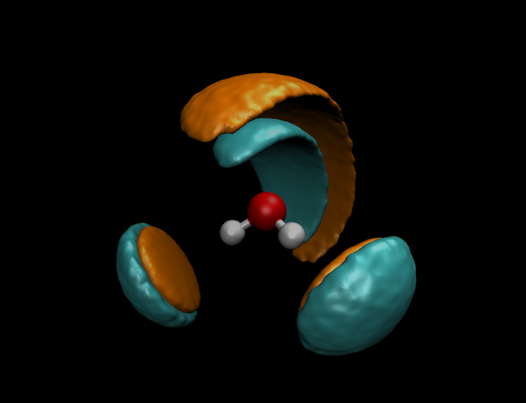

Research
I am a PhD student in the Fernández-Serra group at Stony Brook University.
My primary area of research is the solvation process of ions in water, namely the energetic and structural properties of various states of solvation.
The video to the right demonstrates the formation of separate solvation shells as the atoms in table salt (NaCl) are separated in a classical model of water.

The image to the left is an example of a spatial distribution function, showing the most likely locations of neighboring hydrogens (cyan) and oxygens (orange) around any particular water molecule in solution. The red atom is the water's oxygen, and the white atoms are hydrogens.